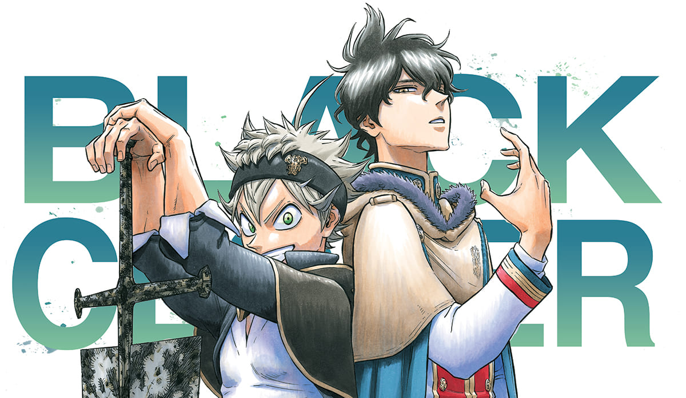

Black Clover
Antes de la serialización de la serie, Yūki Tabata ya había escrito una sola toma del mismo nombre. Dicho one-shot fue publicado en 2014, en el segundo volumen de Jump NEXT. El one-shot se reescribió para la serialización en la que uno de los elementos que comparten ambas versiones es el entorno de los dos protagonistas de Asta y Yuno.
Tras su serialización, Black Clover comienza a ganar popularidad entre los lectores japoneses. El resultado fue que la revista encargó varias páginas en color en sucesiones rápidas para promover aún más la serie. A partir del 30 de noviembre de 2015, Black Clover recibió 2 portadas de revistas y 12 páginas en color.
Además, los capítulos de la serie Black Clover también están siendo recopilados en un formato "Novela Gráfica"「単行本 Tankōbon」en el que cada uno de ellos contendría entre 8-10 capítulos. Una de las principales diferencias entre la versión de la revista y la versión de novela gráfica es la calidad del papel, donde esta última utiliza una calidad de papel mucho más alta. La versión de novela gráfica a veces ofrece una revisión sobre los errores que se hicieron en la publicación original y la mejora sobre el arte en general. Además, la novela gráfica también incluía capítulos adicionales o perfiles de personajes que no se publicaron en la revista.